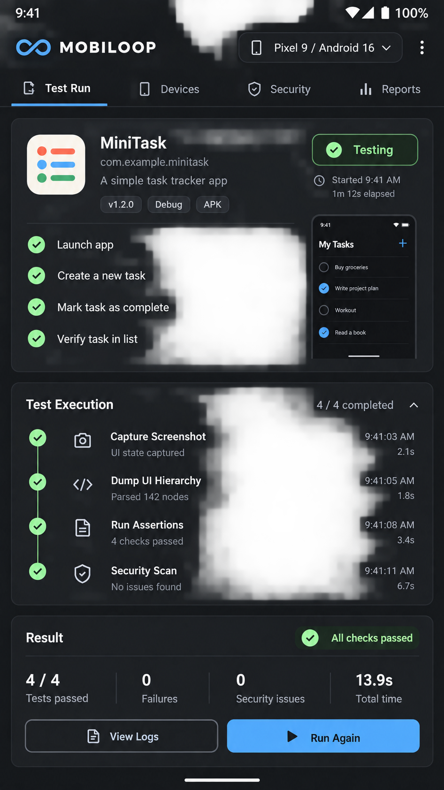

Host-controlled boundaries
Secure mode keeps endpoints local, ignores untrusted project configuration, blocks secret paths, and resolves symbolic links before access.
Release alpha.14 is live
Mobile validation loops that start on a real device and end with evidence your team can inspect.
LIVE MOBILE VALIDATION
MiniTask validation fixture
Actual device automation
Approval-gated actions
Security scan comparisons
Replayable evidence artifacts
The closed loop
Read the codebase, detect routes and screens, then form runnable scenarios.
Run only the approved lint, test, build, and install commands.
Use Appium against a simulator, emulator, or connected physical device.
Store page source, screenshots, assertions, logs, and run iterations together.
Make the approved repair, compare security signals, and rerun the same path.
Guarded by default
Secure mode keeps endpoints local, ignores untrusted project configuration, blocks secret paths, and resolves symbolic links before access.
security.scan_source reads Android and iOS configuration, credential,
transport, storage, and logging signals without adding a scanner dependency.
Compare scan baselines, retain redacted artifacts, and use the release gate before calling an AI-generated repair ready.
Run the release
docker run --rm -i --read-only \
--tmpfs /tmp:uid=10001,gid=10001,mode=1777 \
ghcr.io/enessubass/mobiloop-mcp:0.1.0-alpha.14The image starts as a non-root process with a guarded workspace contract.
Read the container guide ->Operating reference